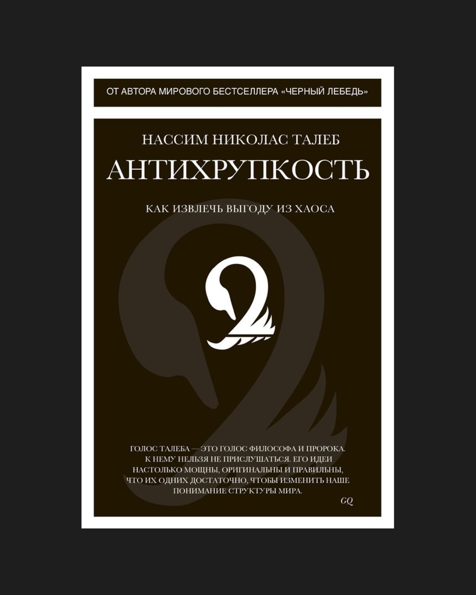

Каждый раз, когда прилетает «черный лебедь» (привет, ключевая ставка 21%), я вспоминаю Нассима Талеба. Его книга «Антихрупкость» напоминает о том, что кризисы — не аномалия и не сбой системы, а естественная часть пути. Важно то, как мы к ним относимся: как к неожиданной катастрофе, которой «не должно было быть», или как к неизбежному этапу, который можно использовать для адаптации и роста.
Книга о том, почему хаос и давление развивают систему. Если принять это, то можно не бояться кризисов, а использовать их, чтобы расти в нестабильности.
Антихрупкость важно формировать в стабильные периоды — именно тогда стоит готовиться к следующему кризису, чтобы встретить его во всеоружии.
Напоминание себе до следующего кризиса:
— не стремиться тратить все на рост и приличную часть прибыли откладывать в резервы;
— продолжать строить культуру сильных и устойчивых к вызовам людей.
В карточках собрал ключевые идеи книги.
Карточки
Антихрупкость - это не просто «выдержать», а стать сильнее
Хрупкое - то, что ломается от напряжения: стекло, корпорация, авторитет. Устойчивое - то, что выдерживает удар: камень, армия, система с резервом. Но антихрупкость - особое качество: это способность выигрывать от нестабильности. Природные организмы, старые институты, мудрые предприниматели - не защищаются от ударов, они встраивают их в рост. Спортсмен адаптируется к нагрузке. Предприниматель учится на провале. Личность крепнет после испытаний. Антихрупкость - это стратегия жизни в мире, где хаос неизбежен.
Хаос, ошибка, давление - это условия роста, а не поломки
Мы боимся нестабильности и всё время стараемся её устранить. Но большинство живых, развивающихся систем питаются именно ею. Без стресса - нет адаптации. Без давления - нет эволюции. Иммунитет становится сильнее после болезни. Мозг учится, сталкиваясь с проблемой. Рыночная экономика оздоравливается через кризис. Хрупкая система требует комфорта. Антихрупкая - требует встряски. Убирая напряжение, ты убираешь и возможность становиться лучше.
Если ты избегаешь малых сбоев, ты создаёшь условия для катастрофы
В природе и в жизни устойчивость достигается через микрокризисы. Когда в лесу регулярно случаются мелкие пожары - они очищают почву, предотвращая масштабный огонь. Но если их подавлять, сгорает весь лес. Так же в проектах, отношениях, экономике: если не дать выйти напряжению, оно взорвётся. Насим Талеб говорит: «Ломайся по чуть- чуть, чтобы не разрушиться целиком». Антихрупкая система не избегает потрясений - она встраивает их в свою логику.
Ставка на прогноз - путь к хрупкости
Главное - способность адаптироваться Мы любим предсказания: экономические графики, бизнес-планы, метеосводки. Но мир не подчиняется линейным сценариям. Реальность часто парадоксальна, искажается редкими, но мощными событиями - «чёрными лебедями». Талеб говорит: пытаться всё предвидеть - опаснее, чем быть готовым ко всему. Система, построенная на прогнозе, ломается при неожиданном. Антихрупкая система строится на опробовании, быстрой реакции и способности меняться. Будь тем, кто учится и двигается, а не тем, кто пишет идеальные, но мёртвые планы.
То, что выдержало века - проверено самым надёжным
фильтром: временем В мире нестабильности самое разумное - доверять не новому, а проверенному. Если книга читается уже 500 лет - в ней есть сила. Если практика работает веками - она устойчива к сбоям. Талеб вводит «эффект Линдии»: чем дольше вещь существует, тем выше вероятность, что она продолжит существовать. Новое часто приносит иллюзию эффективности. Но старое прошло испытание временем, потрясениями, сменой эпох. Хочешь стабильности - опирайся на то, что пережило бури.
Меньше контроля - больше устойчивости
Не трогай, если работает Мы склонны вмешиваться. Мысль «я должен что-то делать» рождает избыточную активность. Но сложные системы часто самоорганизуются. И излишнее вмешательство делает их слабее. Организм сам справляется с лёгкой болезнью - антибиотики иногда мешают. Ребёнок учится на падении - гиперопека мешает. Команда адаптируется - контроль убивает мотивацию. Антихрупкость требует терпения, доверия и понимания момента. Иногда лучшая стратегия - ничего не делать. Не управляй всем. Управляй контекстом где рост возможен.
Проба и ошибка - мощнее интеллекта
Мы думаем, что сложные системы нужно тщательно спроектировать Но мир сложнее любых моделей. Успешные системы - это множество попыток, отбора и выживания лучших решений. Предприниматель запускает десятки гипотез. Эволюция создаёт миллионы вариантов - и оставляет работающие. Антихрупкость - умение быстро ошибаться, анализировать и идти дальше. Хрупкость боится ошибки. Антихрупкость делает её топливом.
Строй жизнь, в которой удары делают тебя сильнее, а не ломают
Антихрупкость - это образ жизни Если ты всё делаешь ради комфорта, безопасности и предсказуемости - ты строишь хрупкую идентичность. Но если ты живёшь так, чтобы стресс закалял, кризис расширял, а боль углубляла - ты становишься сильнее любого сценария. Это не значит искать страдания. Это значит не прятаться от роста. Пусть мир тебя шлифует. Но не ломает.